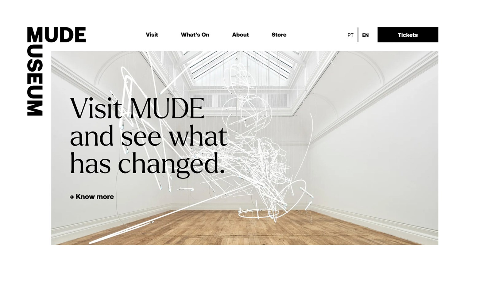
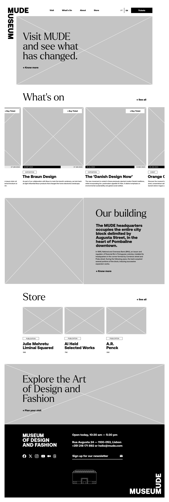

MUDE
A clearer way to discover design and culture.

A digital home for design, fashion and culture.
A museum experience that starts online.
MUDE is a museum dedicated to design and fashion in Lisbon. Its digital presence is an important part of how visitors discover exhibitions, plan their visits and engage with the museum.
This project explores a website redesign focused on clarity, accessibility and a stronger visual identity — helping people find the information they need while building anticipation for the museum experience.
Overview
The project began with a digital experience that no longer reflected the quality and cultural value of the museum.
The website lacked clear navigation, had functional issues and made it difficult for visitors to find exhibition information, event dates and ticket purchasing options.
The goal was to create a minimalist, direct, accessible and informative website that better represented MUDE's identity.
A clearer path to culture.
Make essential museum information easy to find and understand.
Give exhibitions, events and visitor information the visibility they deserve.
Create a digital identity that reflects the museum's focus on design and fashion.
The challenge
The existing website created friction at several stages of the visitor journey.
People struggled to understand how to navigate the site, find information about exhibitions and events, and discover how to purchase tickets.
The experience also lacked visual interest and did not clearly communicate when the museum would reopen.
Design question
How might we transform a confusing museum website into an accessible and informative experience that encourages people to discover and visit MUDE?
People first
The project focused on national and international museum visitors interested in design, art and fashion.
These visitors want to discover exhibitions, explore cultural events, find inspiration and spend quality time learning about design.
Wants to explore exhibitions, events and design culture.
Needs clear information about opening times, location, events and tickets.
Wants to discover new ideas, learn about design and make the most of the museum experience.
What gets in the way?
- Unclear website navigation.
- Difficulty finding exhibition and event information.
- No clear indication of when the museum would reopen.
- Difficulty finding ticket purchasing options.
- A digital experience that does not reflect the museum's visual appeal.
From discovery to visit
The redesigned experience focuses on making the journey from discovering the museum to planning a visit more straightforward.
Visitors should be able to explore what is happening, understand what interests them and find the information needed to attend.
Room to explore
A responsive event agenda and a more informative homepage help visitors discover exhibitions and activities without having to navigate through multiple pages.
A more accessible museum
The redesign focuses on a clear information architecture, consistent visual language and a more direct navigation experience.
Rather than overwhelming visitors with information, the website gives the most important content a clear place in the experience.
Visitors have to work out where content is located and how to complete basic tasks.
Organise the content around what visitors want to know, with clear navigation and a consistent visual identity.
Wireframes
The early exploration focused on organising the website's content and defining a clear hierarchy between the museum's main sections.
The proposed structure separates the museum's identity and information from the foundation's content, while giving exhibitions, events and ticketing a more prominent role.
The design work explored how to:
- Organise content into clear sections.
- Improve the navigation structure.
- Make exhibition and event information easier to access.
- Give ticketing and visitor information greater visibility.
- Create a consistent visual language.
The aim was to make the website easier to use while reflecting MUDE's cultural identity.

Designed for discovery
The proposed website combines a minimalist visual identity with clearer navigation and more useful information.
A clear introduction to MUDE, with a carousel highlighting exhibitions and events.
A responsive agenda that makes current and upcoming activities easier to explore.
Clear access to opening times, location, contacts and ticket prices.
A dedicated ticketing section with clearer information about purchasing options.
A clear separation between the museum's website and the foundation's content.
Let the design speak
The visual direction is minimalist and sophisticated, using a restrained visual identity to give prominence to the museum's exhibitions and collection.
The website should feel informative without becoming visually overwhelming, allowing imagery and cultural content to take centre stage.
Clarity, consistency and focus.
A clear hierarchy between headings, information and navigation.
A consistent use of typography and colour across the website.
A visual system that lets exhibitions and design content stand out.
A more connected museum experience
The project proposes a redesigned digital experience that makes MUDE easier to discover, understand and visit.
By bringing together clearer navigation, a responsive event agenda, more accessible visitor information and a distinctive visual identity, the website supports visitors throughout their journey.
The redesign positions the website as more than a source of information: it becomes an introduction to the museum and its cultural experience.
The result: a clearer, more accessible and visually distinctive digital experience that helps people discover design and fashion.